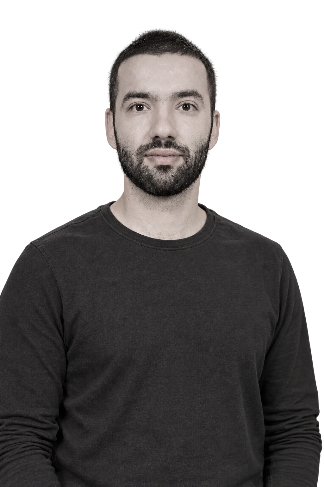

ΜΕ ΕΠΙΚΕΝΤΡΟ ΕΣΑΣ
Ένας χώρος
Εμπιστοσύνης.
Με σεβασμό στη μοναδικότητα και τις ανάγκες κάθε ανθρώπου.
Η προσέγγισή μου
ΑΜΠΕΛΟΚΗΠΟΙ · ΑΘΗΝΑ
Με σεβασμό, ενσυναίσθηση και επιστημονική προσέγγιση, μπορούμε να διερευνήσουμε τις δυσκολίες που αντιμετωπίζετε και να αναζητήσουμε νέους τρόπους διαχείρισης και προσωπικής εξέλιξης.
ΜΕ ΕΠΙΚΕΝΤΡΟ ΕΣΑΣ
Με σεβασμό στη μοναδικότητα και τις ανάγκες κάθε ανθρώπου.
Η προσέγγισή μουΜΙΑ ΠΡΩΤΗ ΕΠΙΚΟΙΝΩΝΙΑ
Δεν χρειάζεται να έχετε
όλες τις απαντήσεις.
ΕΠΙΣΤΗΜΟΝΙΚΗ ΚΑΤΑΡΤΙΣΗ
Σπουδές και επαγγελματική εμπειρία
στην Ελλάδα και τη Γαλλία.
Η ΠΡΟΣΕΓΓΙΣΗ ΜΟΥ
Κάθε άνθρωπος φέρνει τη δική του ιστορία, τις δικές του ανάγκες και τον δικό του ρυθμό. Αφετηρία είναι όσα σας απασχολούν σήμερα και όσα θα θέλατε να κατανοήσετε καλύτερα.
ΠΕΔΙΑ ΥΠΟΣΤΗΡΙΞΗΣ
Το αίτημά σας είναι προσωπικό. Η υποστήριξη ξεκινά με την κατανόησή του και μια προσεκτική διερεύνηση όσων σας απασχολούν.
Διερεύνηση προσωπικών δυσκολιών, συναισθημάτων και αλλαγών στην καθημερινότητα, με επίκεντρο όσα σας απασχολούν.
Συστηματική διερεύνηση του αιτήματος αξιολόγησης, με εκπαίδευση στη χορήγηση των εργαλείων MMPI-2 και WAIS-IV.
Υποστήριξη με βάση την πανεπιστημιακή εκπαίδευση στις εξαρτήσεις και την επαγγελματική εμπειρία στον χώρο της επανένταξης.
Χώρος για δυσκολίες και ερωτήματα γύρω από τη σεξουαλικότητα, με βάση την εκπαίδευση στη σεξουαλική θεραπεία.
ΓΝΩΡΙΣΤΕ ΜΕ
Σταύρος Φλαμουρίδης Ψυχολόγος MSc
Είμαι ψυχολόγος με άδεια ασκήσεως επαγγέλματος και μεταπτυχιακή ειδίκευση στην Κλινική και Δικαστική Ψυχολογία από το Πανεπιστήμιο της Λορένης στη Γαλλία.
Σπούδασα Ψυχολογία στο Εθνικό και Καποδιστριακό Πανεπιστήμιο Αθηνών. Η μετέπειτα εκπαίδευσή μου περιλαμβάνει τη γνωσιακή–συμπεριφορική θεραπεία, τις εξαρτήσεις, τη σεξουαλική θεραπεία και την εφαρμοσμένη αναπτυξιακή ψυχολογία.
Η επαγγελματική μου εμπειρία περιλαμβάνει δομές επανένταξης στην Ελλάδα και τη Γαλλία, καθώς και το Γραφείο Στήριξης Οπλιτών του Στρατού Ξηράς.
Μεταπτυχιακό πρόγραμμα · Ελληνικό Ανοικτό Πανεπιστήμιο Πατρών
Αιγινήτειο Νοσοκομείο, ΕΠΙΨΥ · Πρόγραμμα «Ιωάννης Παπακώστας»
EFPP Σχολή Ψυχοθεραπείας · Γαλλία
Πανεπιστήμιο Παρισιού–Saclay
Μεταπτυχιακό δίπλωμα · Πανεπιστήμιο της Λορένης, Γαλλία
Κέντρο «Περί Ψυχής»
Εθνικό και Καποδιστριακό Πανεπιστήμιο Αθηνών
Κέντρο Υποδοχής και Επανένταξης Αποφυλακισμένων Αθήνας (ΚΥΕΑ)
Στρασβούργο, Γαλλία
Στρατός Ξηράς
Κλινική αξιολόγηση · Χορήγηση ψυχομετρικών εργαλείων · Συμβουλευτική και υποστήριξη · Διεπιστημονική συνεργασία · Αυτονομία και ευελιξία
Αγγλικά C2 · Γαλλικά C2
ΕΠΙΚΟΙΝΩΝΙΑ
Επικοινωνήστε για περισσότερες πληροφορίες ή για να συζητήσουμε το αίτημά σας.
Μπορείτε να επικοινωνήσετε ακόμη κι αν δυσκολεύεστε να περιγράψετε ακριβώς όσα σας απασχολούν. Η αρχική συζήτηση μπορεί να βοηθήσει να διατυπωθεί το αίτημά σας.
Καλέστε στο 698 102 0657 ή στείλτε email για πληροφορίες και διαθεσιμότητα.
ΜΙΑ ΠΡΩΤΗ ΕΠΙΚΟΙΝΩΝΙΑ
Συμπληρώστε τα στοιχεία σας και, αν θέλετε, την ημέρα και ώρα που σας εξυπηρετεί. Το ραντεβού επιβεβαιώνεται μετά από επικοινωνία.